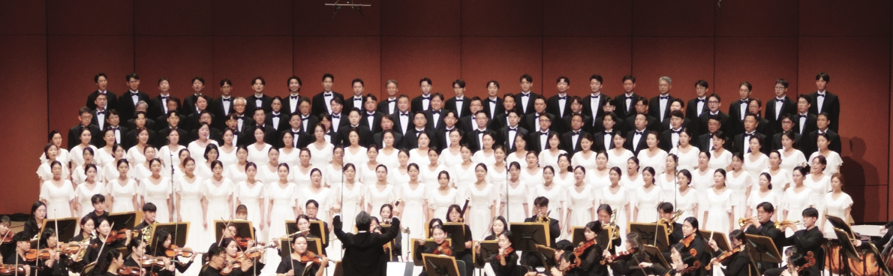

- Now is the Month of MayingT. Morley
- KyrieS. Dobrogosz
- LullabyD. Elder
- JoshuaArr. N. Luboff
삼성한우리합창단 제21회 정기연주회
HEAR WE GO!

삼성전자 인재개발원The UniverSE 콘서트홀
네이버 지도 열기 ↗프로그램
클래식부터 영화 속 선율까지.
- Laudate DominumW. A. Mozart
- 내 가슴엔 바다가 있다박지훈
- Old McDonald Had a FarmArr. M. Johnson
- RejoiceJ. L. Ames
- On Earth as It Is in HeavenE. Morricone
- 너를 태우고J. Hisaishi
- 이웃집 토토로J. Hisaishi
- Nella FantasiaE. Morricone
- Circle of LifeE. John
출연진
상세 소개는 추후 안내합니다.
지휘
박지훈
피아노
김혜연
협연
라퓨즈 플레이어즈 그룹
안무
한상원
함께한 20여 년,
새롭게 이어질 울림.
음악으로 전하는 화합과 감동,
삼성한우리합창단입니다.
2003년 8월, 음악을 사랑하는 삼성그룹 임직원들이 자발적으로 모여 창단했습니다. 정통 클래식부터 현대 가요까지 폭넓은 레퍼토리로 관객과 만나고 있습니다.
정기연주회와 기획 공연, 자선 연주를 이어오며 매년 공연을 통해 난치병 환우를 위한 기부 활동도 함께하고 있습니다. 단원들의 열정과 우정, 음악에 대한 사랑으로 더 많은 사람들과 새로운 울림을 나누고자 합니다.

- 공연 일시
- 2026년 11월 21일 토요일
오후 4시 - 셔틀버스
- 양재역 9번 출구 14:00
영통역 1번 출구 15:00 · 15:30 - 대중교통
- 망포역 1번 출구 → 8번 버스
영통역 1번 출구 → 55번 마을버스 - 주차
- 공연장 내 주차 가능
- 관람 연령
- 초등학생 이상 입장 가능